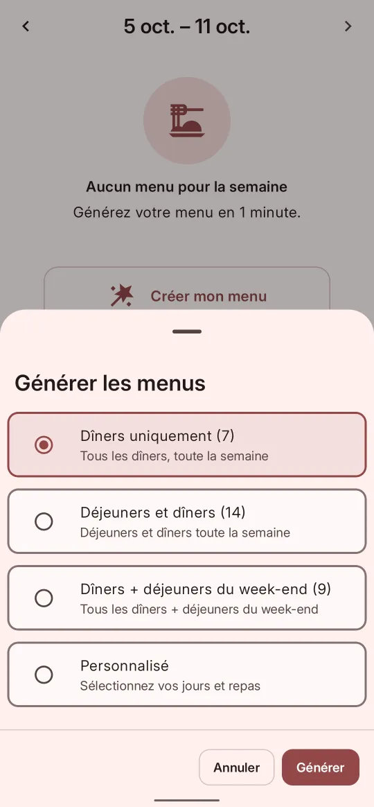
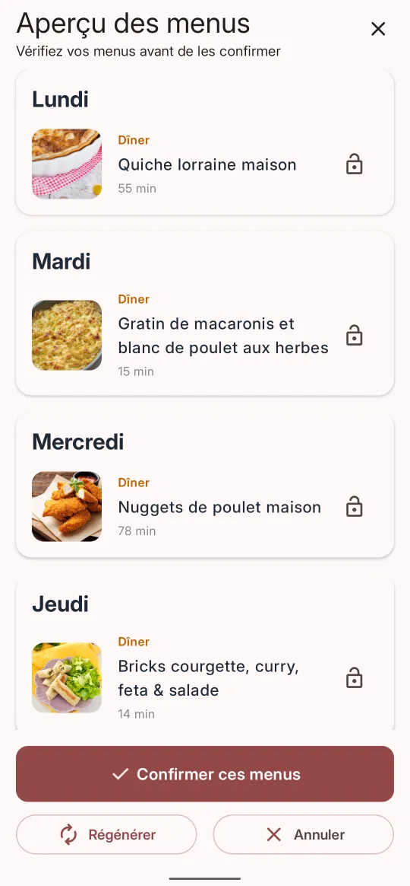

Votre semaine, générée en un clic Gratuit
Choisissez ce que vous voulez couvrir, et Itadaki compose le menu à partir de vos recettes. Un aperçu s'affiche avant validation : vous vérifiez, vous régénérez, vous confirmez.
- 4 modes de planification — dîners, déjeuners et dîners, week-ends, ou sur mesure.
- Épinglez ce que vous aimez et régénérez seulement le reste.
- Remplacez ou échangez une recette avec un autre soir si l'envie n'y est pas.
- Sans limite de générations, même en version gratuite.

